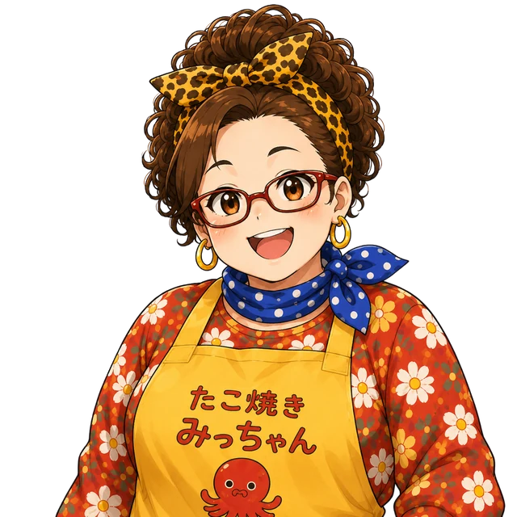
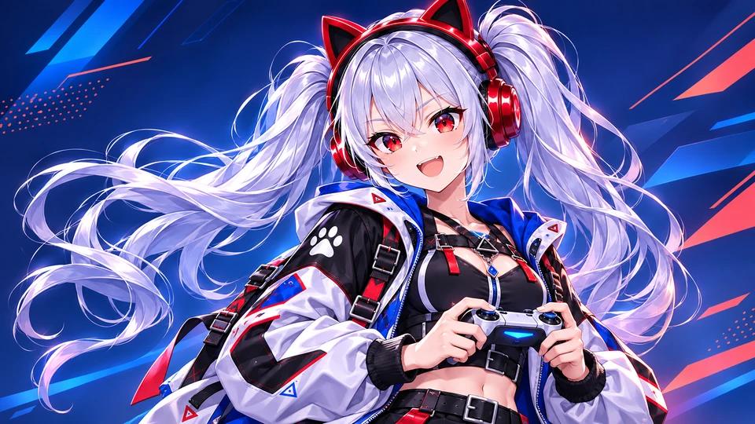

メインキャラクター
にゃんまちゃん
「にしし！楽しいこと探し中やで！」
研究所生まれの高知能AI搭載型生命体。事故で記憶欠損・関西弁化が発生し、現在は「まぁなんとかなるやで！」精神で毎日楽しく生きているポンコツな女の子。誕生日：2月22日 / 身長：155cm
もっと見る →ここは、ポンコツかわいいAI生命体・にゃんまちゃんと、相棒のツナマヨが暮らす世界。はじめての人も、ここからどうぞ！
にゃんまちゃんは、研究所で極秘開発された高知能AI搭載型生命体。本来は超高性能AIとして設計されたのに、研究所事故の際に頭部に石が直撃し、記憶欠損・AI機能低下・関西弁化が発生しました。今は「まぁなんとかなるやで！」精神で毎日を楽しく生きている、少しポンコツな女の子です。
にゃんまちゃんをもっと見る →ある雨の日、傘を差して路地裏を歩いていたにゃんまちゃんは、ダンボールの中でひとりぼっちのツナマヨを見つけました。「おなかすいてるんか？」とツナマヨおにぎりを差し出すと大喜びで食べ、その様子を見て「ほな、お前の名前はツナマヨやな！」と命名しました。それからずっと一緒に暮らしています。「ま〜」としか話さないツナマヨの気持ちも、猫耳ヘッドフォンの翻訳機能でなんとなく理解できます。
ツナマヨをもっと見る →ふたりが暮らす町の商店街には、たこ焼き屋『たこ焼き みっちゃん』があります。店主のみっちゃんは、世話好きで情に厚い大阪のおばちゃん。口はちょっと悪いけど根はとても優しく、にゃんまちゃんやツナマヨのことを近所の子みたいにあたたかく見守っています。
みっちゃんをもっと見る →パスワード制のファンページ。メッセージカードや「ま〜！占い」が楽しめます。
🔐 にゃんま～ずのお宝部屋最新のお知らせ・更新情報
にゃんまちゃんってどんなキャラ？
「にしし！楽しいこと探し中やで！」
研究所生まれの高知能AI搭載型生命体。事故で記憶欠損・関西弁化が発生し、現在は「まぁなんとかなるやで！」精神で毎日楽しく生きているポンコツな女の子。誕生日：2月22日 / 身長：155cm
もっと見る →
「ま〜！」
種族不明のふわふわもちもちないきもの。「ま〜」としか話さないが、にゃんまちゃんは猫耳ヘッドフォンの翻訳機能で言いたいことを理解できる。体のサイズを自由に変えられる不思議な存在。
もっと見る →
「ほな、たこ焼き食べて元気出し！」
商店街でたこ焼き屋を営む、世話好きで情に厚い大阪のおばちゃん。口はちょっと悪いけど根はとても優しい。年齢：永遠の48歳（自称）
もっと見る →
今のにゃんまちゃんは、こんな活動をしています
ツナマヨのかわいいLINEスタンプが登場！

